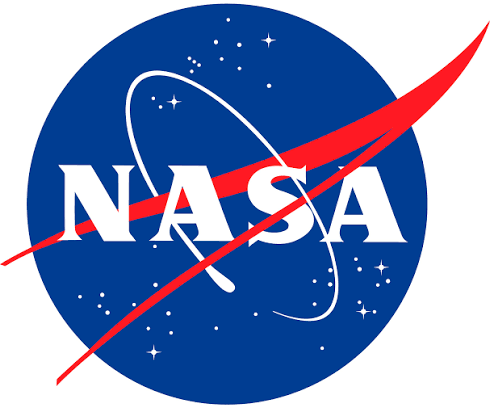
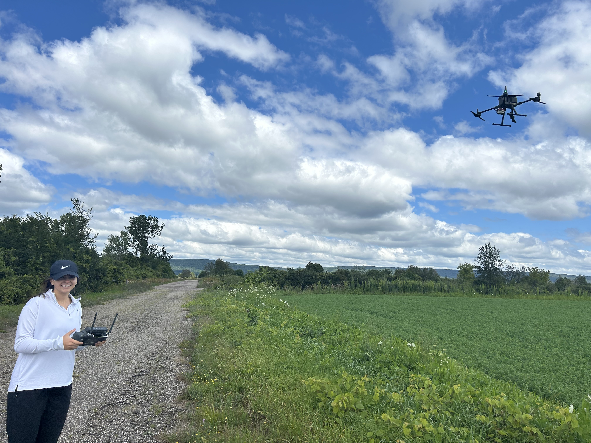
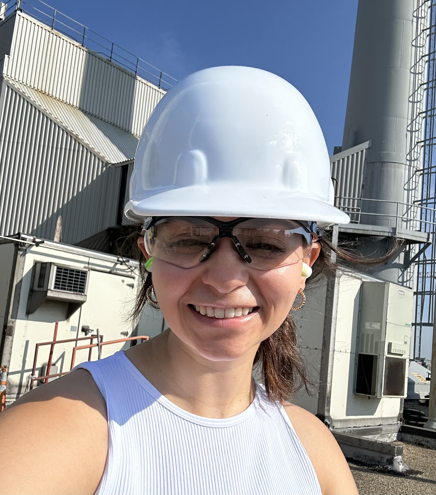
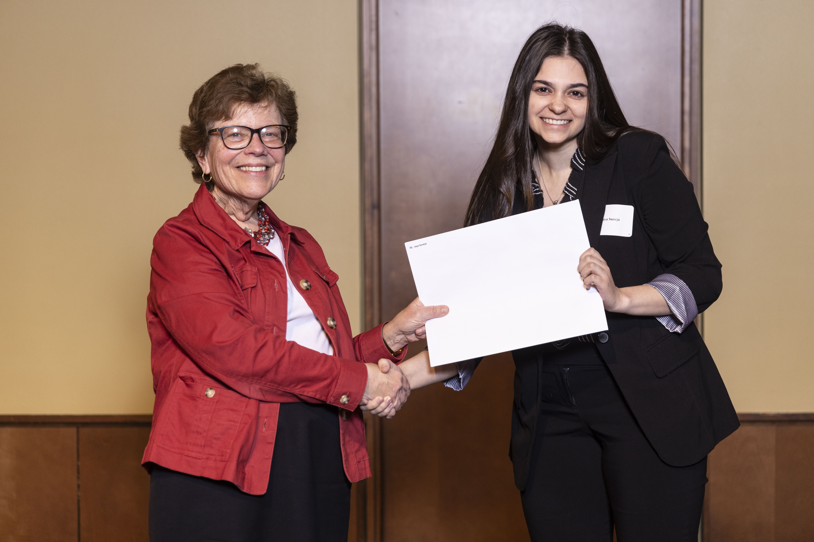

🌳
UAV Remote Sensing for Precision Irrigation
Investigating irrigation distribution uniformity in almond orchards using multispectral and thermal UAV imagery.
View Research →REMOTE SENSING | ENVIRONMENTAL ENGINEERING
I'm an environmental engineer and remote sensing researcher passionate about using geospatial technology to better understand and protect our changing environment. With a master's degree in Biological Systems Engineering and a background in environmental and agricultural remote sensing and engineering, my work bridges field-based science, satellite and UAV imagery, and computational analysis. I've applied these tools to challenges ranging from precision irrigation in California almond orchards to monitoring vegetation dynamics and ecosystem change across Montana's grasslands. I enjoy translating complex environmental data into meaningful insights that support sustainable land and water management. Beyond the technical work, I'm passionate about scientific communication, interdiscplinary collaboration, and connecting research with real world applications. I firmly believe that science is only as impactful as our ability to communicate it. When scientific knowledge is inaccessible, its potential to inform, inspire, and create meaningful change within our communities is diminished. Explore My Research

Exploring environmental challenges through remote sensing, engineering, and field research.
Investigating irrigation distribution uniformity in almond orchards using multispectral and thermal UAV imagery.
View Research →Mapping invasive annual grasses and conifer encroachment using satellite imagery and geospatial analysis. This is NASA research and needs time to go through export control before I can share my work! (Estimated January 2027)
View Research →Investigating soil conditions associated with damping-off disease in red pine seedlings.
View Research →My experience spans remote sensing, environmental engineering, geospatial analysis, and applied research.




Outside of technical research, I enjoy connecting people, sharing science, and supporting opportunities for students and communities.
I'm always interested in connecting with researchers, engineers, and professionals working in remote sensing, environmental engineering, and geospatial science. Feel free to reach out!
Boulder, Colorado